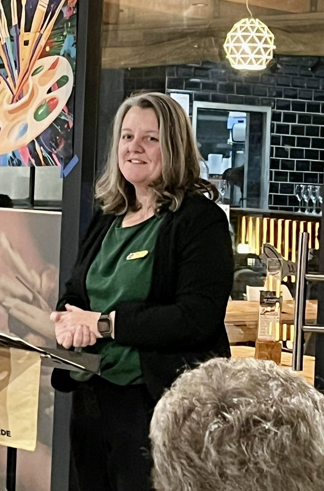

Two ways to work with Michelle
No menus. No packages maze. One front door, one destination — and honest advice about which you need.

This is not theory
Michelle has coached hundreds of speeches as a Toastmasters club president and founder, and spent twenty-seven years leading teams and hiring people in enterprise operations. Every technique in these programmes has been tested in real rooms, on real nerves, with real stakes.
The Clarity Session
Sixty focused minutes on where you are, where you're going, and the three moves that matter most. You leave with a written action plan — and if deeper work would genuinely help, you'll hear exactly what and why. If it wouldn't, you'll hear that too.
Own Your Story
Six weeks of communication and presence coaching built on club-president speaking craft. Rebuild how you structure your story, how you sound telling it, and how you hold a room while you do — then deliver it, for real. One-on-one, or in a cohort of eight where practice is live and feedback is honest.
Every cohort holds one fully funded seat, placed by the I See You movement.
Not sure yet?
Watch the free 20-minute masterclass or take the 2-minute momentum check — both will point you honestly at your next step.
For organisations
Resilience & storytelling keynotes
For organisations
Resilience & storytelling keynotes · presentation-skills workshops for technical teams · from R24,500.
For organisations
Resilience & storytelling keynotes · presentation-skills workshops for technical teams · from R24,500.
For organisations
Resilience & storytelling keynotes · presentation-skills workshops for technical teams · from R24,500.
For organisations
Resilience & storytelling keynotes · presentation-skills workshops for technical teams · from R24,500.
Questions people ask
Which option should I choose?
Everyone starts with the Clarity Session. In sixty minutes we map where you are and what you need — and if a bigger programme is the right move, you'll know exactly why. If it isn't, you leave with a plan anyway. Some clients need focused work on a specific challenge — an interview, a promotion case, a career pivot — and where that's true, Michelle will recommend a tailored option in the session itself.
How do coaching sessions happen?
Online, via video call, anywhere in the world. Sessions are scheduled after purchase, with evening and Saturday slots available for working professionals.
Is this only for people in IT?
No. The coaching serves any experienced professional working on career direction or communication. The founder's background spans technology, education, and operations leadership — the methods apply everywhere.
What is the funded seat?
Every Own Your Story cohort reserves one fully funded place for someone rebuilding after illness, injury, or loss, funded by the Kalmeer community through the I See You movement. Nobody who receives the seat ever pays.